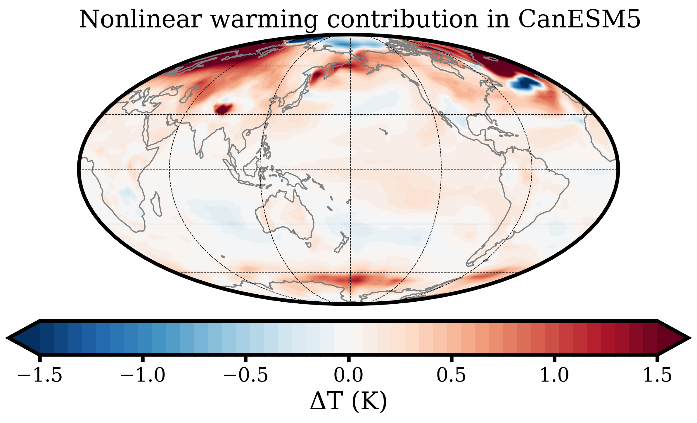

Nonlinear CO₂ Radiative Forcing
Overview
I am currently researching the impact of nonlinear forcing interactions on radiative forcing from CO₂ under Dr. Brian Soden at the University of Miami Rosenstiel School.Abstract
Radiative forcing is a fundamental metric for understanding both human-induced and natural changes in climate. Previous research has explained that upper stratospheric temperature plays a dominant role in modulating the magnitude of radiative forcing from CO2 (He et al. 2023). For example, by cooling the stratosphere, ozone depletion makes forcing caused by the increase in CO2 over this period stronger. Although the stratospheric ozone loss mainly occurs in the lower stratosphere, the associated cooling also contributes to a decline in infrared emission from the lower to the upper stratosphere, which strengthens the CO2 IRF at the top-of-atmosphere. These changes in atmospheric composition involving stratospheric temperature subsequently impact the climate response. This nonlinear interaction between ozone depletion-induced cooling and CO2 IRF can be better quantified through fully coupled ocean-atmosphere models. However, there is a large intermodal spread in CO2 radiative forcing due to model biases in simulating stratospheric temperature (He et al. 2023). Model simulations in which ozone loss and CO2 increase coincide are theorized to have a larger CO2 forcing (and greater surface warming) than the sum of individual model simulations in which each forcing is imposed separately in isolation from the other. The CO2 forcing in the latter is smaller because it is not enhanced by ozone depletion-induced cooling. Here, we analyze nonlinear interactions between individual climate forcings imposed independently on different global climate models. We quantify the importance of these terms in modulating future CO2 radiative forcing and the subsequent warming. We aim to understand how model biases in stratospheric composition influence their simulation of stratospheric temperature and radiative forcing by CO2.Preliminary Results & Figures
